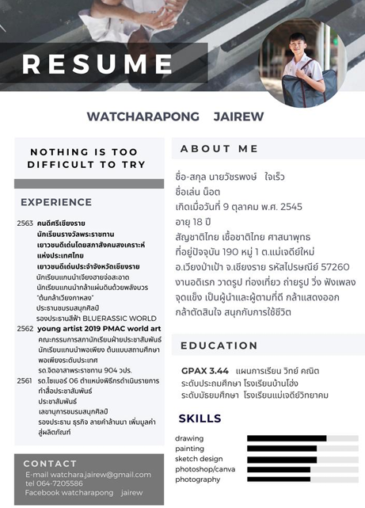
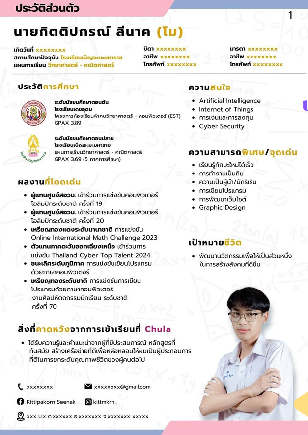
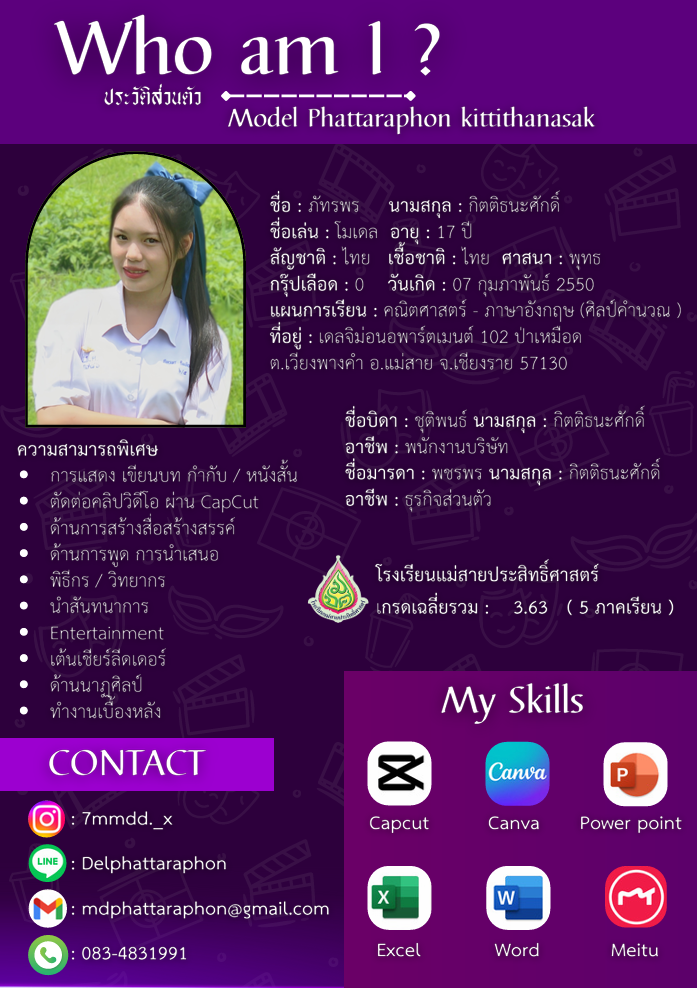
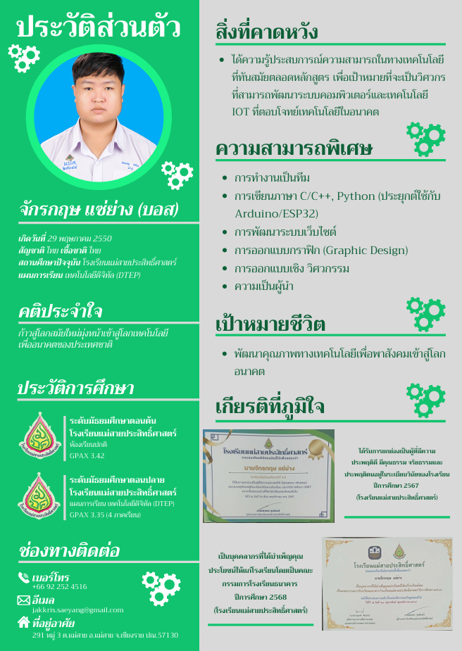

ข้อมูลพื้นฐานที่จำเป็นต้องมี
- ข้อมูลส่วนตัว: ใส่ข้อมูลส่วนตัวพอประมาณเท่าที่จำเป็น เช่น ชื่อ-สกุล วันเกิด สัญชาติ ศาสนา และแผนการเรียน
- ประวัติการศึกษา: แนะนำให้ใส่เฉพาะระดับมัธยมปลาย (พร้อมผลการเรียนเฉลี่ย GPAX) แต่สามารถเพิ่มระดับมัธยมต้นได้หากพื้นที่เหลือ
- ข้อมูลการติดต่อ: ใส่ข้อมูลการติดต่อให้ครบทุกช่องทาง เช่น เบอร์โทรศัพท์, อีเมล, และที่อยู่ปัจจุบัน เพื่อความสะดวกในการติดต่อกลับ
เทคนิคสร้าง First Impression ให้โดดเด่น
- ความสามารถพิเศษ/จุดเด่น: ลิสต์ทักษะทั้ง Hard Skill (เช่น การเขียนโปรแกรม, กราฟิก) และ Soft Skill (เช่น ความเป็นผู้นำ, การทำงานเป็นทีม) ที่มีประโยชน์ต่อสาขาที่เรียน
- ไฮไลต์ผลงานเด่น: ยกผลงานชิ้นโบว์แดง หรือเกียรติประวัติที่ภูมิใจที่สุดมาใส่ในหน้านี้ เพื่อดึงดูดความสนใจกรรมการตั้งแต่หน้าแรก
- เป้าหมายชีวิต (Life Goals): เขียนเป้าหมายความคาดหวังในการเรียน ต้องเขียนให้สอดคล้องกับ SOP (Statement of Purpose) และคณะที่อยากเข้า
💡 เคล็ดลับเพิ่มเติม (Pro Tip)
หน้านี้คือพื้นที่ขายของ! ควรใช้ Icon หรือ Progress Bar ในการแสดงระดับความสามารถ (Skills) แทนการเขียนตัวหนังสือยาวๆ จะช่วยให้หน้าประวัติดูทันสมัย อ่านง่าย และใช้รูปภาพที่ดูมั่นใจหรือเป็นรูปตอนกำลังทำกิจกรรมที่เกี่ยวข้องกับคณะจะยิ่งเสริมความน่าเชื่อถือครับ

